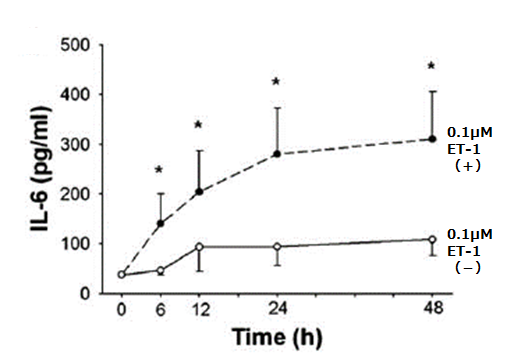
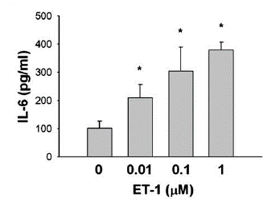

呼吸器疾患の病態において、IL-6を抑えることはよい
- ●ヒト気道平滑筋細胞において、エンドセリン-1がIL-6産生を誘導するメカニズムを検討


エンドセリン-1（ET-1）は、血管内皮細胞で産生される血管収縮性・炎症性ペプチドであり、血管収縮・炎症・線維化・細胞増殖などを引き起こすことによって、肺血管リモデリングを促進させ、肺高血圧症の病態を悪化させる。
IL-6は呼吸器疾患の病態において、炎症やリモデリングに関与するため、
IL-6の作用を抑制することは肺疾患を合併されている患者さんにも不利ではないと考えられる